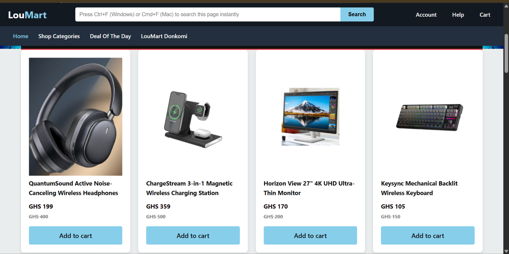

Election official
Electoral Commission of Ghana
Formally appointed by the municipal director. Ballot issuer for the July NPP constituency executive election, and ballot issuer and inker for the October NDC constituency executive election.
I'm passionate about IT Support
I'm studying Information Technology at the University of Ghana. Before that, I spent about two years in the field for Telecel Ghana, registering SIMs, activating mobile money and sorting out phone and network problems for real customers. I'm looking for an IT support internship where I can keep doing that work, with proper tools and people to learn from.
My IT journey is built on determination and self-education. I got my hands on a personal computer later than most people, but my interest in technology started much earlier. So I made up for it: online courses, customer support work at a telecommunications company, and every chance I got to learn by doing.
My first tech job wasn't in a lab. It was a queue of people who needed their SIM registered before a deadline, a fingerprint scanner, a tablet and a network that didn't always cooperate. Most "technical problems" turn out to be someone waiting for you to explain what's going on, and I'm good at staying calm and explaining it.
I haven't held a formal IT support role yet. I'm committed to gaining that practical experience, and I'm keen to connect with people in the industry, learn from them and contribute. I use ChatGPT when I build things, to draft, debug and understand why something works, and I check the result against what the project needs.
Electoral Commission of Ghana
Formally appointed by the municipal director. Ballot issuer for the July NPP constituency executive election, and ballot issuer and inker for the October NDC constituency executive election.
Telecel Ghana (formerly Vodafone Ghana), Accra
Telecel Ghana (formerly Vodafone Ghana), Accra
Human-Computer Interaction project, University of Ghana, 2026
A design concept for an architecture firm's website, made in Figma. I started from what a client would want to know, then planned the screens so a visitor can find the firm's services quickly. We checked the navigation, layout and consistency, and improved them.
Figma, usability evaluation, user-centred design
Team client project · DCIT208 Repository Engineering · University of Ghana


Worked with a seven-member team to develop a digital loan application and staff review system. I contributed to the frontend, application-to-API integration, deployment, and substantially supported teammates' backend development through collaborative, AI-assisted implementation and testing.
Node.js · Express · SQLite · HTML · CSS · JavaScript · GitHub Actions · Azure
Project case study · Team source repository Visit the live website
Independent academic project · Level 200 · E-Business Architectures

Designed and developed independently, using Amazon as a reference for familiar shopping patterns. The multi-page frontend demonstrates product discovery, categories, promotional offers, a cart layout and account interface designs.
HTML · CSS · JavaScript · GitHub Pages
Project case study · View live website (in development) · Original version source code
Earlier education: General Arts, Jachie Pramso Senior High School, Ashanti.
You can also find me on LinkedIn and GitHub, or read about my website services.